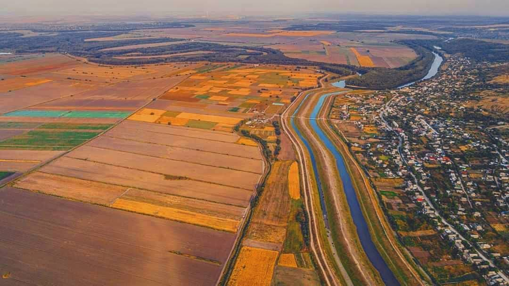

|
Denumire oficială |
Republica Moldova, abreviat RM sau R.M |
|
Țări vecine |
România la vest și Ucraina la nord, est și sud |
|
Suprafața |
33.8 mii km². Teritoriul Republicii Moldova este de 350 km lungime de la nord la sud și 150 km de la vest la est. |
|
Descrierea |
Moldova este un stat fără ieșire la mare. Cu toate acestea, ea are un punct de acces la Dunăre pe o porțiune de 430 de metri, la punctul cel mai sudic al țării (Giurgiulești), care de asemenea, oferă acces potențial la Marea Neagră. |
|
Forma de guvernare |
Republica Moldova este o republică parlamentară cu un președinte ca șef al statului și un prim-ministru ca șef al guvernului. |
|
Diplomația |
Moldova este membră al Organizației Națiunilor Unite, Consiliul European, Parteneriatul pentru Pace, OMC, OSCE, GUAM, CSI, OCEMN și alte organizații internaționale. Republica Moldova aspiră să se alăture Uniunii Europene. |
|
Populația |
3 550 900 locuitori (cu excepția regiunii transnistrene) – estimat în 2014 |
|
Capitala |
Municipiul Chișinău (814 100 locuitori). Cele mai mari orașe Bălți, Soroca, Orhei, Cahul, Tiraspol. |
|
Limba oficială |
Româna, cu toate acestea ucraineană, rusă, găgăuză, bulgară sunt de asemenea vorbite intens. |
|
Aeroporturi |
Aeroportul principal – Aeroportul Internațional Chișinău. Codul internațional aeroportuar KIV |
|
Carduri de credit acceptate |
Aproape toate tipurile de carduri de credit sunt acceptate, un număr foarte limitat de ATM-uri vor accepta carduri de tip "chip and pin". Economia moldovenească este în mod tradițional tranzacționată în numerar, s-ar putea să nu fie întotdeauna posibil de plătit prin card (în special în afara capitalei Chișinău). |
|
Indicatori de dezvoltare |
PIB-ul țării 7 miliarde $ (2017) Salariul minim lunar pe economie $ 128 (2017) Salariul mediu lunar pe economie $ 300 (2017) |
|
Regimul de vize Pentru mai multe stiri politice despre Republica Moldova viziteazaAutosite! Mergi la sectiunea 2 |